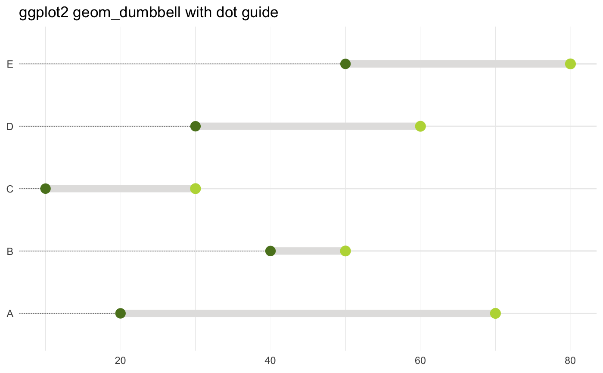
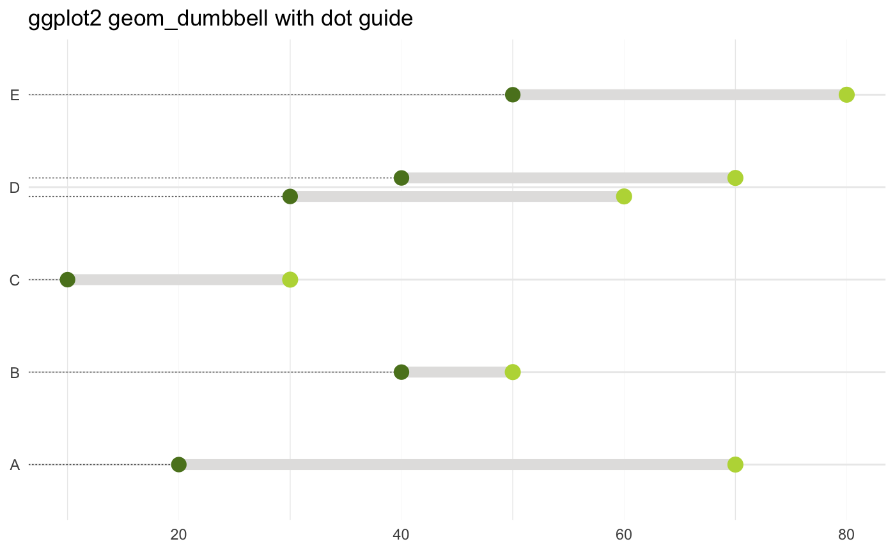

The dumbbell geom is used to create dumbbell charts.
geom_dumbbell(mapping = NULL, data = NULL, ..., colour_x = NULL, size_x = NULL, colour_xend = NULL, size_xend = NULL, dot_guide = FALSE, dot_guide_size = NULL, dot_guide_colour = NULL, na.rm = FALSE, show.legend = NA, inherit.aes = TRUE, position = "identity")
| mapping | Set of aesthetic mappings created by |
|---|---|
| data | The data to be displayed in this layer. There are three options: If A A |
| ... | other arguments passed on to |
| colour_x | the colour of the start point |
| size_x | the size of the start point |
| colour_xend | the colour of the end point |
| size_xend | the size of the end point |
| dot_guide | if |
| dot_guide_size, dot_guide_colour | singe-value aesthetics for |
| na.rm | If |
| show.legend | logical. Should this layer be included in the legends?
|
| inherit.aes | If |
| position | Position adjustment, either as a string, or the result of a call to a position adjustment function. |
Dumbbell dot plots — dot plots with two or more series of data — are an alternative to the clustered bar chart or slope graph.
@section Aesthetics:
geom_segment() understands the following aesthetics (required aesthetics are in bold):
x
y
xend
yend
alpha
colour
group
linetype
size
vignette("ggplot2-specs").
library(ggplot2) df <- data.frame(trt=LETTERS[1:5], l=c(20, 40, 10, 30, 50), r=c(70, 50, 30, 60, 80)) ggplot(df, aes(y=trt, x=l, xend=r)) + geom_dumbbell(size=3, color="#e3e2e1", colour_x = "#5b8124", colour_xend = "#bad744", dot_guide=TRUE, dot_guide_size=0.25) + labs(x=NULL, y=NULL, title="ggplot2 geom_dumbbell with dot guide") + theme_minimal() + theme(panel.grid.major.x=element_line(size=0.05))## with vertical dodging df2 <- data.frame(trt = c(LETTERS[1:5], "D"), l = c(20, 40, 10, 30, 50, 40), r = c(70, 50, 30, 60, 80, 70)) ggplot(df2, aes(y=trt, x=l, xend=r)) + geom_dumbbell(size=3, color="#e3e2e1", colour_x = "#5b8124", colour_xend = "#bad744", dot_guide=TRUE, dot_guide_size=0.25, position=position_dodgev(height=0.4)) + labs(x=NULL, y=NULL, title="ggplot2 geom_dumbbell with dot guide") + theme_minimal() + theme(panel.grid.major.x=element_line(size=0.05))